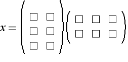

The Operator Properties dialog gives you away to control properties that effect the layout of MathML operators. In MathML, the term "operator" is more general than the ordinary mathematical concept of an operator. A MathML operator is basically any bit of notation that renders like an operator. MathML operators include not only normal mathematical operators such as +, -, integrals, etc. but also notations such as parentheses and braces, since all stretchy symbols are "operators" in MathML.
The effect of each MathML operator property is described discussed below.
The form property is used to designate an operator as 'prefix', 'infix' or 'postfix'. By default, this property is set to automatic, and in almost all cases, this will produce the best results.
In a few cases, explicitly setting the form can effect the spacing around an operator. Specifically, prefix and postfix operators have less space between themselves and their operands than the infix version of the operator. This is most noticeable in the case of a unary minus. However, if you find yourself needing to set the form for a minus sign because the automatic setting isn't giving the desired result, chances are good that something is wrong with the nesting structure of your templates.
These two spacing properties determine the amount of white space to the left and right of an operator. The default value is automatic, which sets the spacing around an operator to roughly reflect it's precedence; high precedence operators are generally closer to their operands than low precedence operators.
These attributes should normally only be set to achieve special effects, or to tweak the appearance of an equation when operators are being used in a non-standard way. These properties can be set to any non-negative size value.
The next four properties control the behavior of operators that stretch. Operators that stretch include "fence" characters such as (,),[,],{,}, and |. Some arrows also stretch, as do some mathematical accent characters such as an overbar or a tilde.
The default value for all of these properties is automatic, and except for rare situations, this will give the best results. The most common case where any of these properties need to be explicitly set is to turn off stretching for a normally stretchy character.
In general, a stretchy operator will shrink or grow to match the size of the enclosing template. The following properties modify that behavior.
The min size and max size control the maximum and minimum amount a stretchy operator is allowed to stretch. They can be set to any non-negative size value. The max size property can also be set to the keyword 'infinity'.
This true or false property determines whether an operator should stretch or not. While setting this property to 'false' for a normally stretchy operators will prevent it from stretching, setting it to 'true' will generally have no effect on a non-stretching operator.
Most stretchy operators, such as parentheses, stretch symmetrically about the centerline of the equation. In some cases, such as a rectangular matrix that is not aligned symmetrically, you would prefer that the surrounding parentheses stretch asymmetrically to match the matrix.

The default value for this property is automatic. Typically the only reason to set this property explicitly is to set it to 'false' in cases such as that illustrated above.
There are several families of MathML operators whose typographic properties vary depending on the surrounding context. The most obvious example is the summation operator, where the limits of summation are usually placed above and below the summation symbol in equations that are centered and set off from the text, and place in the sub- and superscript postions in equations that appear inline.
The following three properties control context-sensitive behaviors of MathML operators.
Operators such as the summations, integrals, direct sums, etc. have both a small inline version and a larger version for display equations. This property controls whether the large form of these operators should be automatically used in display style contexts. The default value is automatic.
When typesetting operators that have limits, there is a choice whether to put them above and below the operator, or in the script positions. As a general rule, limits go above and below in equations in display style contexts where vertical space is not an issue. When equations are set inline, however, it is usually better to keep vertical spacing to a minimum, so as to affect inter-line spacing as little as possible. Thus, it is tradition to put limits in the script positions for inline equations.
This property tells a MathML renderer whether to automatically shift limits into the script positions, when it detects that an equation is inline. Setting the property to 'false' will result in limits always being set above and below the operator. The default value is automatic.
When typesetting overscripts and underscripts, the usual practice is to use a smaller type face. However, when typesetting mathematical accents, such as a tilde or a bar, as an overscript, you typically want the font size of the accent to match the size of the character to which it is attached. By setting this property to 'true' you can instruct MathML renderers not to decrease the font size for an operator when it is being typeset as a script. The default value is automatic.